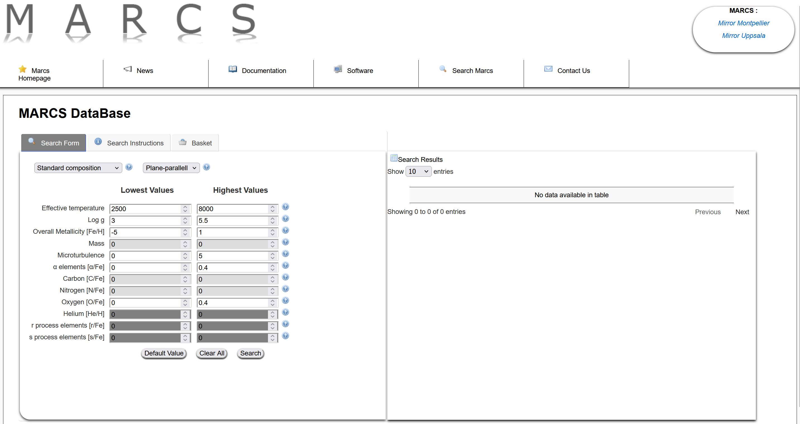
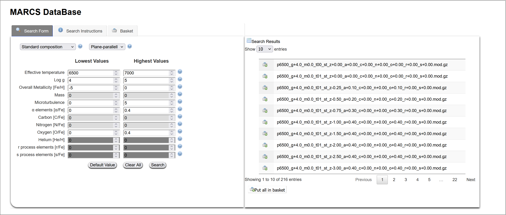

In the quickstart notebook you saw STARDIS using the file ‘sun.mod’ to create spectra based on the sun. Here we will show how to obtain and use a .mod file for a star of your chosen parameters.
Using MARCS to get .mod files
STARDIS uses files from the MARCS site, which “contains about 52,000 stellar atmospheric models of spectral types F, G and K”. Here we will only be discussing the aspects of MARCS needed for STARDIS. To get started, go to the ‘Search Marcs’ tab of the MARCS site

picture of the Search Marcs page
Getting an atmosphere model is as easy as entering a range of parameters of your choosing. For more information on what each of these qualities are, you can click the question marks next to each option or refer to the MARCS documentation.
In the below example, we have entered some arbitrary values into MARCS, and on the right are now all files that qualify. Note how the names of the files show the exact parameters of each file and how there are several pages of files you can look through.

MARCS uses a ‘shopping cart’ style system for selecting models, called your ‘basket’. Once you have selected your chosen models, proceed to the ‘Basket’ tab to download them. Make sure you only have ‘.mod’ files selected, as that is the format used by STARDIS.
Below is an example of a yaml file using the ‘sun.mod’ file. Note that you can provide either the relative or absolute path to your new model data.
stardis_config_version: 1.0
atom_data: kurucz_cd23_chianti_H_He.h5
model:
type: marcs
fname: sun.mod # <----- this is where the .mod file is specified
final_atomic_number: 30
opacity:
...
One last thing: gzipped files
when you download a mod file from MARCS, it will be gzipped (shown by the file ending with ‘.mod.gz’). By default STARDIS will assume you have extracted the file, however you can add a line to the yaml file ‘gzipped: True’ as shown below and STARDIS will take care of this for you.
...
model:
type: marcs
fname: sun.mod
gzipped: True # <----- use this if the file is gzipped
final_atomic_number: 30
...